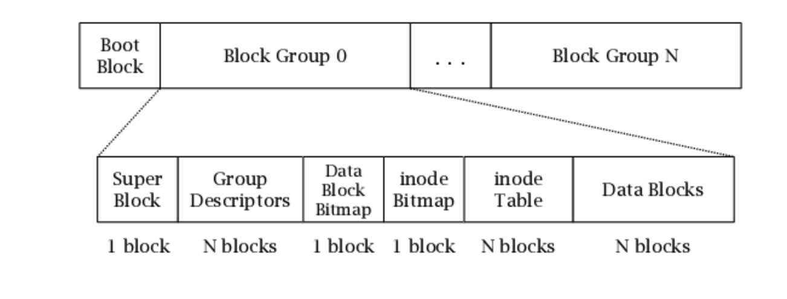
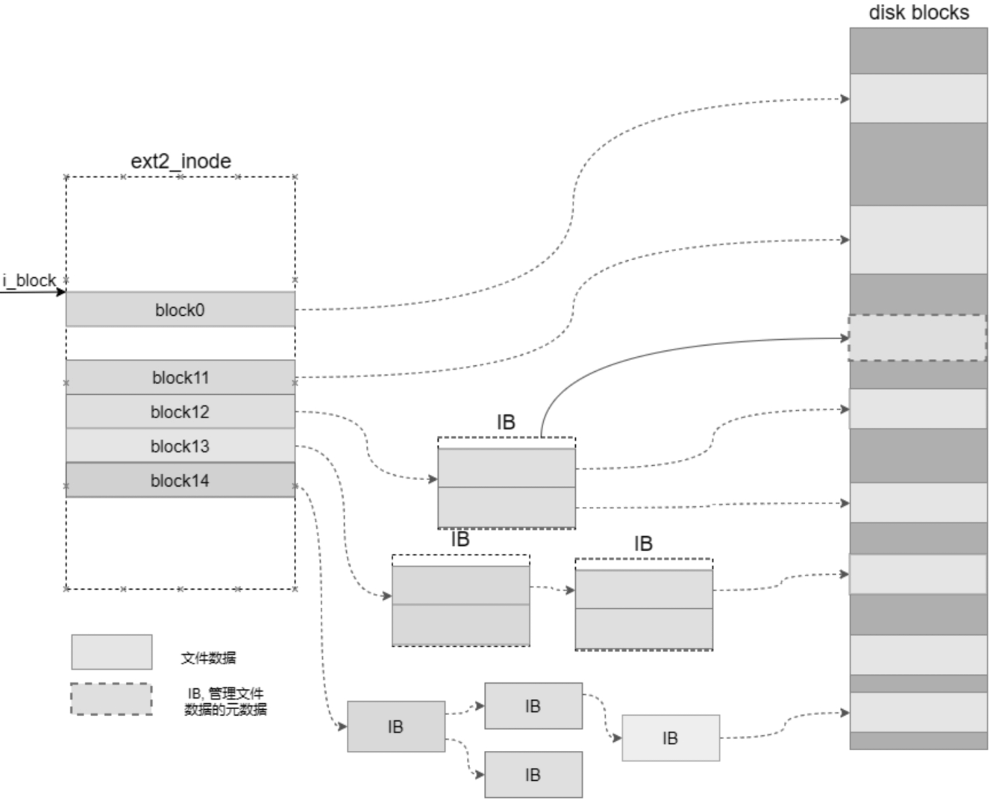

文件系统之ext2
为什么学习ext2
linux早期的文件系统，虽说功能不是特别强大，但是麻雀虽小却五脏齐全，适合用于学习。
怎么得到一个ext2的文件系统
这里首先要知道文件系统并不一定需要安装在硬盘上，我们可以通过创建一个块设备，并将块设备格式化为ext2文件系统。
首先我们通过dd创建一个16M的空白块设备
dd if=/dev/zero of=mdisk bs=1M count=16
将该块设备进行ext2格式化
mkfs.ext2 mdisk
此时mdisk这个文件已经被格式化为ext2格式了，我们通过下面的命令确认一下
dumpe2fs mdisk
dumpe2fs 是linux自带的一个工具，可以查看文件系统的描述信息
一般的，我们会得到以下的信息
dumpe2fs 1.44.5 (15-Dec-2018)
Filesystem volume name: <none>
Last mounted on: <not available>
Filesystem UUID: 6f4abbce-ba88-491b-98c6-82275d98afa6
Filesystem magic number: 0xEF53
Filesystem revision #: 1 (dynamic)
Filesystem features: ext_attr resize_inode dir_index filetype sparse_super large_file
Filesystem flags: signed_directory_hash
Default mount options: user_xattr acl
Filesystem state: clean
Errors behavior: Continue
Filesystem OS type: Linux
Inode count: 4096
Block count: 16384
Reserved block count: 819
Free blocks: 15723
Free inodes: 4085
First block: 1
Block size: 1024
Fragment size: 1024
Reserved GDT blocks: 63
Blocks per group: 8192
Fragments per group: 8192
Inodes per group: 2048
Inode blocks per group: 256
Filesystem created: Wed Nov 23 01:06:01 2022
Last mount time: n/a
Last write time: Wed Nov 23 01:06:01 2022
Mount count: 0
Maximum mount count: -1
Last checked: Wed Nov 23 01:06:01 2022
Check interval: 0 (<none>)
Reserved blocks uid: 0 (user root)
Reserved blocks gid: 0 (group root)
First inode: 11
Inode size: 128
Default directory hash: half_md4
Directory Hash Seed: f18550d1-7a1e-4c49-b8cc-742790eca888
Group 0: (Blocks 1-8192)
Primary superblock at 1, Group descriptors at 2-2
Reserved GDT blocks at 3-65
Block bitmap at 66 (+65)
Inode bitmap at 67 (+66)
Inode table at 68-323 (+67)
7855 free blocks, 2037 free inodes, 2 directories
Free blocks: 338-8192
Free inodes: 12-2048
Group 1: (Blocks 8193-16383)
Backup superblock at 8193, Group descriptors at 8194-8194
Reserved GDT blocks at 8195-8257
Block bitmap at 8258 (+65)
Inode bitmap at 8259 (+66)
Inode table at 8260-8515 (+67)
7868 free blocks, 2048 free inodes, 0 directories
Free blocks: 8516-16383
Free inodes: 2049-4096
东西太多看不懂？没关系接下来一一解释。
ext2的布局
由图可以看出，ext2会将整个块设备划分为多个块组(Block Group)，每个块组里又划分成6个区域，分别是超级块、块组描述符、数据块位图，inode位图，inode表以及数据块。其中各部分的作用如下

-
超级块
超级块是文件系统的起始位置，它是整个文件系统的入口。文件系统的挂载（初始化）就是从读取这里的数据开始 的。在超级块中记录了整个文件系统的描述信息，如格式化时指定的文件系统逻辑块大小信息、逻辑块的数量、inode的 数量，根节点的id和文件系统的特性。上面dumpe2fs中输出的描述信息，基本就是超级块的内容。超级块对应对应ext2源码里的
ext2_super_block结构体。 -
块组描述符
块组描述符的描述信息包括对应块组中数据块位图的位置、inode位图的位置和inode表的位置等信息。另外，还包 括数据块和inode的剩余情况等信息。对应源码里的
ext2_group_desc。 -
块位图
块位图标识了块组中哪个数据块被使用了，哪个数据块没有被使用。在块位图区中将1字节(Byte）划分为8份，也 就是用1位(bit）对一个逻辑块进行标记。如果该位是0，则表示该位对应的逻辑块未被使用；如果该位是1，则表示该位 对应的逻辑块已经被使用。
-
inode位图
和块位图类似，标识哪个inode被使用了，哪个inode没有被使用
-
inode表
记录inode的信息，对应结构体
ext2_inode_info -
数据块
存放具体的数据以及目录项
ext2_dir_entry_2
举个例子
回到一开始我们创建的mdisk，通过dumpe2fs我们知道，这个mdisk的块大小为1024个字节，并且被划分了2个块组。
...
Block size: 1024
...
Group 0: (Blocks 1-8192)
Primary superblock at 1, Group descriptors at 2-2
Reserved GDT blocks at 3-65
Block bitmap at 66 (+65)
Inode bitmap at 67 (+66)
Inode table at 68-323 (+67)
7855 free blocks, 2037 free inodes, 2 directories
Free blocks: 338-8192
Free inodes: 12-2048
Group 1: (Blocks 8193-16383)
Backup superblock at 8193, Group descriptors at 8194-8194
Reserved GDT blocks at 8195-8257
Block bitmap at 8258 (+65)
Inode bitmap at 8259 (+66)
Inode table at 8260-8515 (+67)
7868 free blocks, 2048 free inodes, 0 directories
Free blocks: 8516-16383
Free inodes: 2049-4096
可以简单的看出，Group0的块范围从1~8192(为什么不是从0开始呢？因为第一个block被拿去作为文件系统的启动块了), 其中超级块在Group0的1号block里，块组描述符在2号描述符里，Reserved GDT blocks 意味着ext2还保留了部分块不对外使用。块位图在第66号块里，inode位图在67号块里，inode表在68～323号块里，剩下的338～8192块作为数据块。
注意到Group1里的第一个块是
Backup superblock, 这是ext2为里防止超级块数据损毁而在其他的块组里做的备份，值得学习
接下来，我们借助hexdump工具查看mdisk的内容。
查看启动块的内容
对于hexdump命令，
-s代表偏移多少字节，-n代表查看多少字节
# 由于启动块就在第0个block上，所以我们偏移0个字节，往后查看1024个字节的内容
hexdump -s 0 -n 1024 mdisk
返回如下（最左边一列是十六进制的地址，地址后面是十六进制表示的数据，每一行是16个字节）
0000000 0000 0000 0000 0000 0000 0000 0000 0000
*
0000400
可以看出，启动块此时并没有写入任何数据，1024个字节都是0
查看超级块的内容
hexdump -s 1024 -n 1024 mdisk
返回
root@10-23-47-166:~/workspace/ext2# hexdump -s 1024 -n 1024 mdisk
0000400 1000 0000 4000 0000 0333 0000 3d6b 0000
0000410 0ff5 0000 0001 0000 0000 0000 0000 0000
0000420 2000 0000 2000 0000 0800 0000 0000 0000
0000430 0179 637d 0000 ffff ef53 0001 0001 0000
0000440 0179 637d 0000 0000 0000 0000 0001 0000
0000450 0000 0000 000b 0000 0080 0000 0038 0000
0000460 0002 0000 0003 0000 4a6f cebb 88ba 1b49
0000470 c698 2782 985d a6af 0000 0000 0000 0000
0000480 0000 0000 0000 0000 0000 0000 0000 0000
*
00004c0 0000 0000 0000 0000 0000 0000 0000 003f
00004d0 0000 0000 0000 0000 0000 0000 0000 0000
00004e0 0000 0000 0000 0000 0000 0000 85f1 d150
00004f0 1e7a 494c ccb8 2774 ec90 88a8 0001 0000
0000500 000c 0000 0000 0000 0179 637d 0000 0000
0000510 0000 0000 0000 0000 0000 0000 0000 0000
*
0000560 0001 0000 0000 0000 0000 0000 0000 0000
0000570 0000 0000 0000 0000 0000 0000 0000 0000
*
0000800
我们通过对照源码的ext2_super_block结构体可以看出对应的含义
struct ext2_super_block {
__le32 s_inodes_count; /* Inodes count */
__le32 s_blocks_count; /* Blocks count */
__le32 s_r_blocks_count; /* Reserved blocks count */
__le32 s_free_blocks_count; /* Free blocks count */
__le32 s_free_inodes_count; /* Free inodes count */
__le32 s_first_data_block; /* First Data Block */
__le32 s_log_block_size; /* Block size */
__le32 s_log_frag_size; /* Fragment size */
__le32 s_blocks_per_group; /* # Blocks per group */
__le32 s_frags_per_group; /* # Fragments per group */
__le32 s_inodes_per_group; /* # Inodes per group */
__le32 s_mtime; /* Mount time */
__le32 s_wtime; /* Write time */
__le16 s_mnt_count; /* Mount count */
__le16 s_max_mnt_count; /* Maximal mount count */
__le16 s_magic; /* Magic signature */
__le16 s_state; /* File system state */
__le16 s_errors; /* Behaviour when detecting errors */
__le16 s_minor_rev_level; /* minor revision level */
__le32 s_lastcheck; /* time of last check */
__le32 s_checkinterval; /* max. time between checks */
__le32 s_creator_os; /* OS */
__le32 s_rev_level; /* Revision level */
__le16 s_def_resuid; /* Default uid for reserved blocks */
__le16 s_def_resgid; /* Default gid for reserved blocks */
/*
* These fields are for EXT2_DYNAMIC_REV superblocks only.
*
* Note: the difference between the compatible feature set and
* the incompatible feature set is that if there is a bit set
* in the incompatible feature set that the kernel doesn't
* know about, it should refuse to mount the filesystem.
*
* e2fsck's requirements are more strict; if it doesn't know
* about a feature in either the compatible or incompatible
* feature set, it must abort and not try to meddle with
* things it doesn't understand...
*/
__le32 s_first_ino; /* First non-reserved inode */
__le16 s_inode_size; /* size of inode structure */
__le16 s_block_group_nr; /* block group # of this superblock */
__le32 s_feature_compat; /* compatible feature set */
__le32 s_feature_incompat; /* incompatible feature set */
__le32 s_feature_ro_compat; /* readonly-compatible feature set */
__u8 s_uuid[16]; /* 128-bit uuid for volume */
char s_volume_name[16]; /* volume name */
char s_last_mounted[64]; /* directory where last mounted */
__le32 s_algorithm_usage_bitmap; /* For compression */
/*
* Performance hints. Directory preallocation should only
* happen if the EXT2_COMPAT_PREALLOC flag is on.
*/
__u8 s_prealloc_blocks; /* Nr of blocks to try to preallocate*/
__u8 s_prealloc_dir_blocks; /* Nr to preallocate for dirs */
__u16 s_padding1;
/*
* Journaling support valid if EXT3_FEATURE_COMPAT_HAS_JOURNAL set.
*/
__u8 s_journal_uuid[16]; /* uuid of journal superblock */
__u32 s_journal_inum; /* inode number of journal file */
__u32 s_journal_dev; /* device number of journal file */
__u32 s_last_orphan; /* start of list of inodes to delete */
__u32 s_hash_seed[4]; /* HTREE hash seed */
__u8 s_def_hash_version; /* Default hash version to use */
__u8 s_reserved_char_pad;
__u16 s_reserved_word_pad;
__le32 s_default_mount_opts;
__le32 s_first_meta_bg; /* First metablock block group */
__u32 s_reserved[190]; /* Padding to the end of the block */
};
举例说明，对于第一行
0000400 1000 0000 4000 0000 0333 0000 3d6b 0000
1000 0000 表示inode数量4096（注意右边才是高地址），4000 0000 表示block的数量，即16384。可以看到hexdump里打印的内容和dumpe2fs里的描述信息是一致的。
查看block bitmap
block bitmap在第66号block上，因此偏移66*1024个字节
hexdump -s 67584 -n 1024 mdisk
返回
0010800 ffff ffff ffff ffff ffff ffff ffff ffff
*
0010820 ffff ffff ffff ffff ffff 0001 0000 0000
0010830 0000 0000 0000 0000 0000 0000 0000 0000
*
0010c00
一行16个字节，即16*8个位
可以看出总共有 (16 * 2 + 10) * 8 + 1 = 337 个位被标记成1，即有337个块被使用了
查看inode bitmap
block bitmap在第67号block上，因此偏移67*1024个字节
hexdump -s 68608 -n 1024 mdisk
返回
0010c00 07ff 0000 0000 0000 0000 0000 0000 0000
0010c10 0000 0000 0000 0000 0000 0000 0000 0000
*
0010d00 ffff ffff ffff ffff ffff ffff ffff ffff
*
0011000
十六进制的07ff即二进制的 11111111111, 总用有11个1，代表有11个inode被使用了, 这个适合你可能会有疑问，明明我们什么文件都还没创建，怎么就有11个inode被使用了呢？其实这里是ext2保留了前11个inode作为内部使用。特别是2号inode，是作为整个文件系统的根目录。
查看inode表
在dumpe2fs的输出中，我们知道了每个inode的大小位128个字节，并且inode表在第68～323号块中。
查看1号inode的内容
hexdump -s 69632 -n 128 mdisk
返回
0011000 0000 0000 0000 0000 0179 637d 0179 637d
0011010 0179 637d 0000 0000 0000 0000 0000 0000
0011020 0000 0000 0000 0000 0000 0000 0000 0000
*
0011080
同上面看超级块的方法类似，我们对照inode结构体ext2_inode来看
/*
* Structure of an inode on the disk
*/
struct ext2_inode {
__le16 i_mode; /* File mode */
__le16 i_uid; /* Low 16 bits of Owner Uid */
__le32 i_size; /* Size in bytes */
__le32 i_atime; /* Access time */
__le32 i_ctime; /* Creation time */
__le32 i_mtime; /* Modification time */
__le32 i_dtime; /* Deletion Time */
__le16 i_gid; /* Low 16 bits of Group Id */
__le16 i_links_count; /* Links count */
__le32 i_blocks; /* Blocks count */
__le32 i_flags; /* File flags */
union {
struct {
__le32 l_i_reserved1;
} linux1;
struct {
__le32 h_i_translator;
} hurd1;
struct {
__le32 m_i_reserved1;
} masix1;
} osd1; /* OS dependent 1 */
__le32 i_block[EXT2_N_BLOCKS];/* Pointers to blocks */
__le32 i_generation; /* File version (for NFS) */
__le32 i_file_acl; /* File ACL */
__le32 i_dir_acl; /* Directory ACL */
__le32 i_faddr; /* Fragment address */
union {
struct {
__u8 l_i_frag; /* Fragment number */
__u8 l_i_fsize; /* Fragment size */
__u16 i_pad1;
__le16 l_i_uid_high; /* these 2 fields */
__le16 l_i_gid_high; /* were reserved2[0] */
__u32 l_i_reserved2;
} linux2;
struct {
__u8 h_i_frag; /* Fragment number */
__u8 h_i_fsize; /* Fragment size */
__le16 h_i_mode_high;
__le16 h_i_uid_high;
__le16 h_i_gid_high;
__le32 h_i_author;
} hurd2;
struct {
__u8 m_i_frag; /* Fragment number */
__u8 m_i_fsize; /* Fragment size */
__u16 m_pad1;
__u32 m_i_reserved2[2];
} masix2;
} osd2; /* OS dependent 2 */
};
可以看到 0179 637d 对应 i_atime, 即时间戳 1669136761
查看数据块
前面我们都是分析ext2文件系统格式化之后自带的数据内容，还没有真正自己往ext2中写入过数据。那么怎么自己往ext2里写入数据呢，我们需要执行以下几个步骤，将mdisk这个块挂载起来
losetup 命令用于设置循环设备。循环设备可把文件虚拟成区块设备，籍以模拟整个文件系统，让用户得以将其视为硬盘驱动器，光驱或软驱等设备，并挂入当作目录来使用。
losetup /dev/loop0 mdisk
mount /dev/loop0 /mnt/test
此时mdisk即被挂载到/mnt/test目录里，进入目录后我们发现跟普通的目录看不出区别。
cd 进入 /mnt/test, 创建一个带内容的文件a.txt
root@ubuntu:/mnt/test# echo abcd > a.txt
root@ubuntu:/mnt/test# ls -ali
total 18
2 drwxr-xr-x 3 root root 1024 Nov 23 02:10 .
786437 drwxr-xr-x 3 root root 4096 Nov 21 01:42 ..
12 -rw-r--r-- 1 root root 5 Nov 23 02:10 a.txt
11 drwx------ 2 root root 12288 Nov 23 01:06 lost+found
通过上面的ls命令我们知道了a.txt是inode号为12，那么接下来我们就去mdisk的inode表里找到这个inode。
每个inode的大小位128个字节，并且inode表在第68～323号块中，因此12号inode所在的偏移为68 * 1024 + 11 * 128 = 71168, 所以hexdump命令如下：
hexdump -s 71040 -n 128 mdisk
返回
0011580 81a4 0000 0005 0000 1282 637d 10b3 637d
0011590 10b3 637d 0000 0000 0000 0001 0002 0000
00115a0 0000 0000 0001 0000 0201 0000 0000 0000
00115b0 0000 0000 0000 0000 0000 0000 0000 0000
*
00115e0 0000 0000 baff 4d19 0000 0000 0000 0000
00115f0 0000 0000 0000 0000 0000 0000 0000 0000
0011600
81a4 0000 即是i_mode，转化为八进制即100644, 即 -rw-r--r--; 0005 0000 即是i_size，转化为十进制即5;
i_block是存着数据块的地址，在偏移40个字节处的位置，即 0201, 十进制即513, 所以算出实际的偏移地址为513 * 1024 = 525312, 而inode的size为5，因此hexdump命令如下：
hexdump -s 525312 -n 5 -C mdisk
返回
00080400 61 62 63 64 0a |abcd.|
00080405
可以看出，确实存放着我们之前echo的abcd
查看inode的子目录
前面提到，ext2_inode里的i_blocks存放的是数据块的地址；对于文件，数据块即是存放文件内容的地方；而对于目录，数据块存放的则是目录项 ext2_dir_entry_2。
/*
* The new version of the directory entry. Since EXT2 structures are
* stored in intel byte order, and the name_len field could never be
* bigger than 255 chars, it's safe to reclaim the extra byte for the
* file_type field.
*/
struct ext2_dir_entry_2 {
__le32 inode; /* Inode number */
__le16 rec_len; /* Directory entry length */
__u8 name_len; /* Name length */
__u8 file_type;
char name[]; /* File name, up to EXT2_NAME_LEN */
};
我们之前在根目录底下创建过a.txt文件，现在我们就去根目录对应的inode表(2号inode)里去查看它是如何存储的。
首先查看2号inode表
hexdump -s 69760 -n 128 mdisk
返回
0011080 41ed 0000 0400 0000 2d34 637e 2d32 637e
0011090 2d32 637e 0000 0000 0000 0003 0002 0000
00110a0 0000 0000 0001 0000 0144 0000 0000 0000
00110b0 0000 0000 0000 0000 0000 0000 0000 0000
再通过十六进制 0144 算出偏移十进制 324 * 1024 = 331776
# hexdump -s 331776 -n 128 mdisk -C
00051000 02 00 00 00 0c 00 01 02 2e 00 00 00 02 00 00 00 |................|
00051010 0c 00 02 02 2e 2e 00 00 0b 00 00 00 14 00 0a 02 |................|
00051020 6c 6f 73 74 2b 66 6f 75 6e 64 00 00 0c 00 00 00 |lost+found......|
00051030 d4 03 05 01 61 2e 74 78 74 00 00 00 00 00 00 00 |....a.txt.......|
00051040 00 00 00 00 00 00 00 00 00 00 00 00 00 00 00 00 |................|
*
00051080
可以看到确实是存储着inode对应目录里的子项
ext2的文件数据如何管理
在Ext2文件系统中，文件数据的位置信息存储在ext2_inode的1block成员变量中。该变量是一个32位整型数组，共有15个成员，前12个成员中的内容为文件数据的物理地址，后3个成员存储的内容指向磁盘数据块。数据块中存储的数据并不是文件的数据，而是地址数据。由于在这种情況下数据块存储的并非是文件数据，而是inode与文件数据中间的数据，因此被称为间接块 (Indirect Block，简称IB）

举例，对于小文件来说，通过直接引用就可以完成数据的存储和查找。比如，在格式化时文件逻辑块大小是4KB, 48KB（4Kx12） 以内的文件都可以通过直接引用完成。但是，如果文件大于48KB，直接引用则无法容纳所有的数据，48KB以外的数据先要通过一级间接引用进行存储。以此类推，当超过本级存储空间的最大值时，要启用下一级进行文件数据的管理。